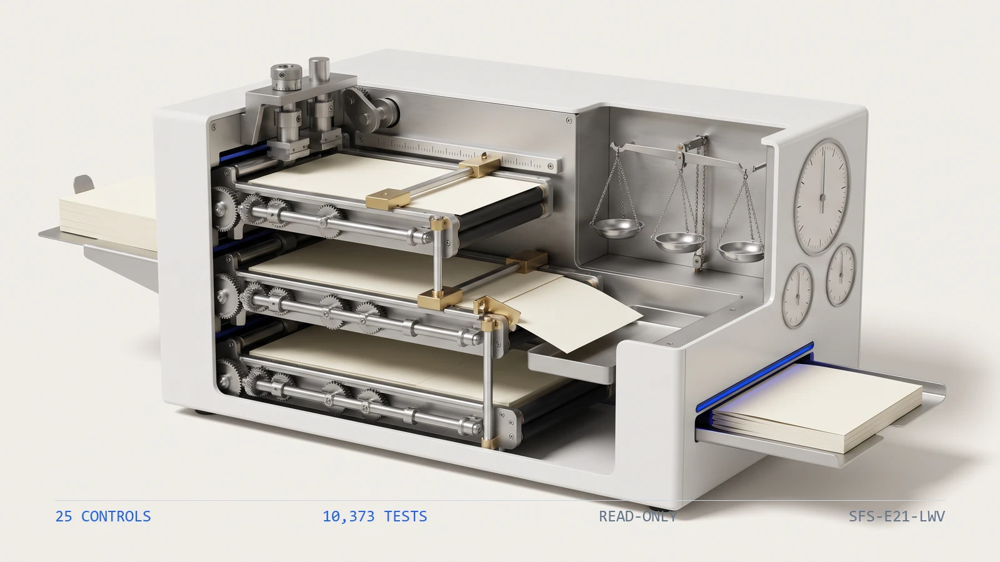

10,3731
Tests
the collected checks that pin this engine's behavior
ENGINE 21
SFS-E21-LWV · LIEN WAIVERS · REV 2026-07-24 · PRODUCTION
PRODUCTION = runnable end-to-end, CI-backed, full test suite passing. All data fictional and seeded.
No lien survives the payment
A residential developer pays down a chain -- a general contractor, its subcontractors, their own lower-tier subs and material suppliers -- and every party in that chain can file a mechanics lien against the project. A lien waiver is the release that gives the lien up, and it has to march in lockstep with the money: the right kind of waiver, running through the right date, for the right amount, at every tier. This engine reads the artifacts the subcontractor payment cycle emits -- the contract register and its tier chain, the payment register, the waiver register, the lower-tier register, the exposure summary and the waiver log -- and runs twenty-five deterministic controls over them. Is every progress payment covered by a waiver that reaches its paid-through date, does every cleared payment carry an unconditional release and not merely the conditional signed at payment, did every required lower-tier party release far enough through a date re-derived from its parent's own payments, and does the unwaived exposure per project re-derive from the payments and the releases. It re-derives each tie-out where the money actually landed, compares each one with exact equality, and never writes to a source artifact.
The failures here do not look wrong while a waiver is on file, which is exactly why they survive to closing. A subcontractor signs a conditional waiver when it is paid -- conditional on the cheque clearing -- and owes an unconditional one once it has; the cheque clears, nobody chases the unconditional, and the folder looks complete because a waiver is on record while the lien right is still live. A waiver runs through a date, and a release that stops a month short of the work the payment covered leaves the last tranche unwaived with a waiver still sitting in the file. And the subcontractor's own release does not reach its rebar supplier, paid out of that same progress payment: a downstream lien survives the upstream release and attaches to the same title. Having a waiver on file is necessary and not sufficient. The engine proves the right kind of waiver reaches the right date at every tier, re-derives the unwaived exposure a title company would price the deal on, ships a planted-defect file for every registered control, and states its benchmark as a command rather than a claim.
Eight control families run in registry order over each portfolio file. The first proves the others had something to read and that the review date is legible, because a control that passes on absent evidence reports assurance it never performed.
A residential developer pays down a tier chain -- a general contractor, its subcontractors, and their own lower-tier subs and material suppliers -- and every party in it can file a mechanics lien against the project. A lien waiver is the release, and it has to march in lockstep with the money: the right kind of waiver, running through the right date, for the right amount, at every tier. Three failures hide inside that, and none of them look wrong while a waiver is on file. A subcontractor signs a conditional waiver when it is paid, conditional on the cheque clearing, and owes an unconditional one once it has; the cheque clears, the unconditional is never chased, and the file looks complete because a waiver is on record while the lien right is still live. A waiver runs through a date, and a release that stops short of the work the payment covered leaves the last tranche unwaived, unnoticed because there is a waiver in the folder. And the subcontractor's own release does not reach its supplier, paid out of that same progress payment: a downstream lien survives the upstream release and attaches to the same title. None of these are judgment calls. They are equalities and coverage tests -- a release against the date it must reach, a waiver amount against the payment, an unwaived exposure against its re-derivation -- which a deterministic control settles better than a spreadsheet inherited by whoever holds it this year.
The seeded demo runs every control over every portfolio file7. The CLI generates 27 fictional portfolio files -- one clean baseline and one carrying each of the 26 planted defects -- then runs all 25 controls over each. The clean file returns PASS with no flags; every defect file returns REVIEW or FAIL and names the control it tripped along with the reason that control exists.
The conditional does not survive the cheque8. A test shortens the unconditional waiver on a cleared payment so it no longer reaches the paid-through date, while the conditional still does. cov_cleared_unconditional fires because a conditional release does not survive the cheque clearing, and cov_payment_covered stays silent because a release still reaches the date -- proof that a waiver on file is necessary but not sufficient.
The lower-tier release reaches the parent's paid date, to the day9. A test moves a lower-tier party's release one day either side of the date its parent was paid through. A day short, tier_waiver_covers fires because the most recent downstream work is unwaived; on the day or beyond, it stays silent -- the same one-day boundary that separates a covered supplier from a surviving downstream lien.
| Command | Operation | Output | Exit | Artifacts |
|---|---|---|---|---|
python run.py | regenerate the seeded fictional corpus, run all twenty-five controls, write both reports | per-file verdicts and every actionable finding, then the overall verdict | 2 for the bundled corpus, which carries a planted defect for every control by design | lien_report.json, lien_report.md, samples/ |
python -m lien_engine samples | analyze an existing folder of portfolio files without regenerating it | per-file verdicts and findings | 0 PASS / 1 REVIEW / 2 FAIL / 3 usage | none unless --json or --md is passed |
python -m lien_engine samples --generate --quiet | regenerate the corpus and print only the overall verdict | a single verdict line | 0 PASS / 1 REVIEW / 2 FAIL / 3 usage | samples/ |
python -m pytest | run the full test suite for this engine | 10373 passed | 0 when every test passes | none |
| Measure | Result |
|---|---|
| Engine tests10 | 10,373 tests collected live collection from the engine directory |
| Registered controls11 | 25 controls counted from the registry, not from documentation |
| Planted defects12 | 26 defect files every registered control has at least one file that trips it |
| Control coverage13 | 100 percent of controls with a planted defect no control ships without a file demonstrating it firing |
The engine has no write path and therefore no autonomy to gate. It produces findings; a person decides whether a waiver book is clear to close over.
Deterministic envelope. seeded fictional inputs, read-only operation, offline default mode.
Demo gate. FAIL on the bundled corpus, by design -- it carries a planted defect for every registered control
| Severity | Verdict | Action |
|---|---|---|
| No findings above PASS | PASS | carry the mechanically clean waiver book into the documented coverage and reporting review |
| One or more FLAG, no FAIL | REVIEW | a human resolves each flag; a conditional waiver aged past its upgrade window and a covered-payment count that does not reconcile both land here |
| One or more FAIL | FAIL | the waiver book is not treated as clear until the failing control is cleared -- a cleared payment with no unconditional release, a short or missing lower-tier waiver, or an exposure that does not re-derive |

Distribution: public repository, MIT license.
One conversation: you describe the work that consumes your team's month; we tell you plainly what this engine can take over, what it can't, and what a scoped first phase would cost. Your people keep approval authority.
Book a free consultation